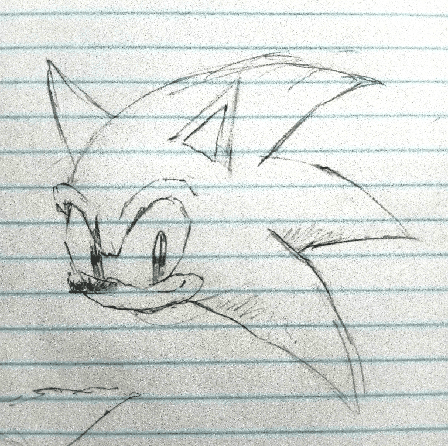

Happy New Year everyone!!!
It should be long past 2026 for every time zone now, so I can remove the Christmas decor now! The homepage looks a little sad without it now though.. oh well. I might try adding new decor for other events and seasons, but for now, things are back to how they started.
As usual, I have plenty to ramble about, so sit down, relax, and enjoy your stay!
~~~
As of writing, today is my birthday (4th January)! I can't tell you how old I am, but I think that no matter the age, getting older always has a rather strange feeling. Partially, I feel happy that I've lived another year with good (enough) health and that I've come so far since I was born. But on the other hand, there's a sort of melancholy and sadness to it all. A reminder of your "time limit". An inch closer the end. Memories fading from your memory slowly. Chances and opportunities start closing out. It's time to grow up...
..what a cold way to start the new year ^^;
Sorry for getting all like this, but I can't help it. This is how I feel. Everyday feeling like both another chance for happiness, but also another chance for sorrow and regret. There's something that Dio from Jojo's Bizzare Adventure said that has really stuck with me ever since I first saw it: "All human beings live for one purpose: to acheive peace of mind." I'm not sure if I got the quote down word for word, but that's how I remember it ^^;. But yes, this quote has always felt oddly interesting to me. It's a statment that's 100% true, and fits basically every single functioning human I think. It's something so obvious, but is able to encapsulate and explain what is basically "The Human Will" in only a few words. After all, when I look at myself, and see what I'm doing, it's all for that purpose alone. To finally put to rest that strange feeling in my heart that hate so badly.
~~~
Yesterday, I made a cool system that makes it easier to interface with the player's coordinates and divides the entire game world into chunks. It's a similar system to Minecraft, but rather than the chunks storing data, they simply act as an interface or some kind of translation layer that makes it easier to compare coordinates. Since I'm bad at explaining, let me just tell you what it's main purpose is for lol ^^;. It's primary function is to make it easy to lower the LOD of distant 3D models and cull / reduce the processing of distant enemies and scripts. While I was working on the Touhou game for PSVita, I one of the issues I encountered was that there were simply too many polygons not in view that were taking up too much performance, so I tried to use Area3D nodes to detect what was and wasn't close to the player, but this turned out being the wrong way to approach this and it only caused more lag than before. Godot's collision and area system is very detailed and precise, which is why it's meant more for hitboxes and event triggers, not for optimization. Of course, you COULD use them for this, but not by putting in giant 2000x2000x2000 collision shapes all around the map that are constantly on to check if the player is in the area. However, the chunk system doesn't use collision shapes and instead uses the coordinates of only the player to detect where they are. We can then have the Nodes of the distant terrain read this data to check if they should or shouldn't use a lower LOD. Like this, we don't need to have a node that checks 8,000,000,000 integer coordinates every frame to check if the player is nearby (note, that's interger coords, not even floats lol.)
There isn't any reason for me to mention this, I just felt really accomplished for doing it ^^; (even though it's very simple)
~~~
I wanna talk a bit more about my plans for the year and what not. I don't really have new years "resolutions" but there are many things I want to improve on this year. The first major thing, is that I want to improve my content consumption habits. That sounds pretty vague on it's own, so let me elaborate. I, admittedly... am really, REALLY addicted to social media. Specifically YouTube, it's like a virus to me. As soon as I'm connected to the internet, my fingers just instinctively hop on Chrome, type in the single letter "w", and immediately click the first suggestion which is always YouTube. I then spend 5 hours minimum on a bunch of 20min-2hr videos about things I'm vaguely interested in before I literally can't anymore due to mobile data limits. I then go and do something actually creative like work on my games, or draw until the next day when I crawl back to my parents asking for money for more mobile data like a crackhead experiencing withdrawl. Then, I repeat the cycle. In case you were wondering, this is why I take so long to make stuff, because I get distracted... sorry :(
So how will I fix this? Well... uh... just... trying not to do this ^^. This year, I want to watch atleast 10 entire animes or TV shows from start to finish. Specifically ones that are considered of high aclaim that for some reason, I haven't seen yet. I also want to limit that YouTubers and content on YouTube that I watch. Instead of letting myself go wild doom-scrolling on the homepage. I want to only watch either things specifically from my subscriptions tab, or things that I search for myself. This is fairly easy on my computer thanks to the "Unhook" chrome extension, but it's rather difficult to do on my phone since thay immediately throw you onto the homepage as soon as you open the app (sometimes it's actually the Shorts tab... :(... ), but I'll try my best to click off before any videos load. As for the anime/tv show thing.. I have to admit that I'm also pretty bad at commiting to watching shows... Like, I'll start watching one, get half-way through, and then be like "Wow, this is great!" -before dropping it completely to go watch YouTube videos about it instead...
Here's a list of some stuff I need to get back to:
Dragon Ball (OG), Jujustu Kaisen (still on season 1 lol), Jojo's Bizzare Adventure (done with the first 3 parts!), Mysterious Girlfriend X (I forgot where i heard of this from, but I loved it lol), The Evangelion Rebuild Movies (i watch half of the first one and was like "this sucks" but I'll skip it when going back)
And here's a list of stuff I need to START and FINISH watching this year:
Black Clover, Ghost in the Shell, Fist of the North Star, Gachiakuta, Serial Expirements Lain, e.t.c.
I especially want to watch Lain, since it was directed by the same person as the creator as Malice@Doll, a cool 3D cg OVA series I found while doom-scrolling on YouTube one random day lol. I would recommend it... but the subject matter is pretty dark, and it's a very explicit OVA, so... yeah, be warned...?
Anyways... its timmeeeeeee forrrrrrrrr.........
~~ SONG OF THE ENTRY ~~
aura - .hack//SIGN Original Soundtrack
My favourite song, from one of my favourite anime! This is a gloomy, dark track that suits the somewhat tragic nature of the character it's named after. //SIGN is one of my favourite pieces of dotHack media and it's atmosphere plays a big role in that, and by extension, it's music too. Please have a listen!
SONG LINK ::
YouTube (Source 1)
YouTube (Source 2)
==========
Hmmmmmmmmmmm...
meh. I don't really have much to say from here lol.. ^^;
here's a drawing :)

I think I've yapped for long enough, thank you so much for reading! I hope you have a wonderful year :) See ya later!